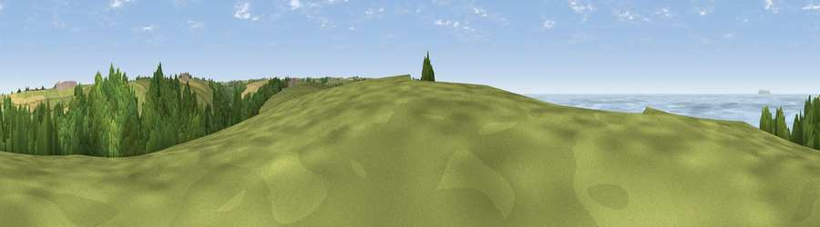

Viewpoint near Hartland
#3058 in England · top 16% of its area beats it · near HartlandThe view, rendered

A 360° render of this exact spot computed from the terrain model, tree cover and land cover — summer colours, afternoon light, calibrated against photographs of famous viewpoints. Real trees, hedges and buildings will differ in detail.
The panorama
Grey silhouette: terrain skyline in each direction (720 bearings, Earth curvature and refraction included). Dashed green: skyline with trees (+15 m) and buildings (+8 m) as obstacles. Blue strip: how far the ground is visible on each bearing.
Where the view opens
Wedge length = distance to the farthest visible ground on that bearing (vegetation-aware). Rings at 10, 25 and 50 km.
What fills the view
51% water · 23% grassland · 21% woodland · 5% cropland
Angular shares of the visible panorama (visual magnitude), not map area. Landscape diversity 0.52 (0–1 Shannon).
Key numbers
More beautiful places nearby
The staircase of upgrades: each row has a higher view potential than everything closer. Driving times are estimates from straight-line distance, calibrated against real road routing — check an actual route before setting out.
| Place | Direction | Drive | Score |
|---|---|---|---|
| Viewpoint near Hartland | N · 1 km | ~3 min | 76.3 |
| Viewpoint near Philham | S · 2 km | ~6 min | 76.7 |
| Viewpoint near Hartland | NE · 3 km | ~8 min | 77.9 |
| Embury Beacon | S · 6 km | ~12 min | 83.8 |
| Viewpoint near Bucks Mills | E · 15 km | ~27 min | 84.0 |
| Viewpoint near Woolacombe | NE · 28 km | ~45 min | 84.7 |
| Viewpoint near Crackington Haven | SSW · 32 km | ~50 min | 88.1 |
| Viewpoint near Combe Martin | ENE · 43 km | ~63 min | 88.9 |
50.99878, -4.52921 · source: screening · position refined by local search. Computed location — check access rights before visiting.